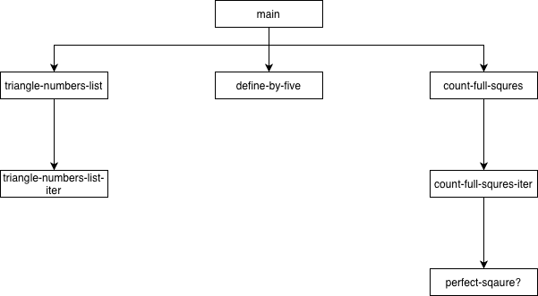
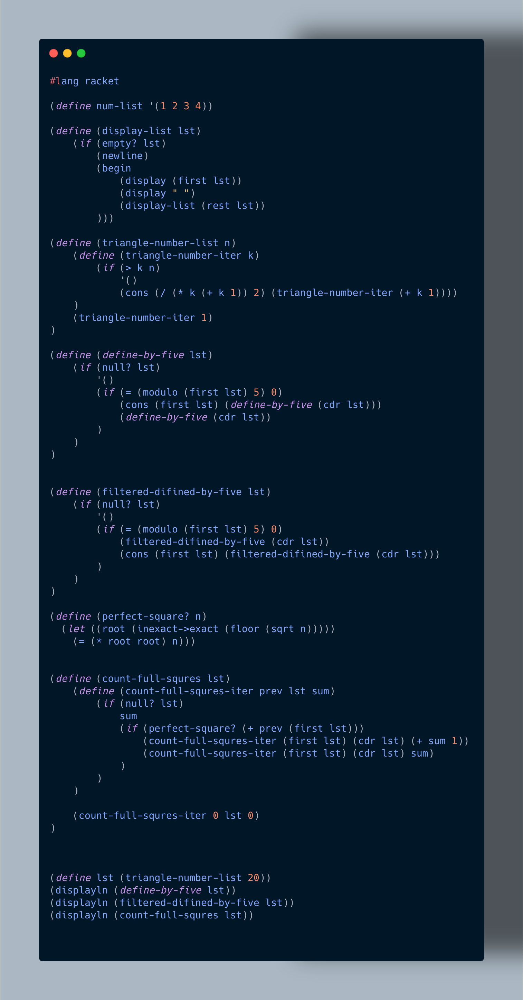

Мета: Опанувати теоретичні основи використання списків функціональними мовами та розробити програми обробки списків
Умова:
1. Згенерувати список трикутних чисел, задавши їх кількість. Трикутні числа складають послідовність 1, 3, 6, 10, 15, 21, 28, 36, 45, …. Формула для обчислення трикутного числа: t1 = 1; tn = n + tn−1. Вивести створений список. Виконати такі операції:
a. Створити підсписок з елементів, кратних 5;
b. Видалити зі списку всі елементи, що є кратні 5;
c. Перевірити, чи дорівнює сума двох послідовних трикутних чисел повному квадрату числа. Підрахувати кількість повних квадратів чисел, що утворює список
2 Написати код, що моделює процес управління списком справ на період (день, тиждень, місяць тощо) – сценарій Dropbox Paper, Google Tasks. Нехай існує перелік завдань, яким задані пріоритети та Deadlines. Потрібно створити список першочергових справ враховуючи пріоритети та терміни виконання. Задачі можуть бути декомпозовані на підзадачі, які утворюють підсписки. Відсортувати список за термінами виконання та за пріоритетами. Продемонструвати сценарій виконання завдань, вибираючи їх зі списку, вилучаючи зі списку завдання, які вже виконані, пересуваючи завдання у списку відповідно до зміни пріоритету або терміну виконання.
Аналіз:
1. Завдання полягає у побудові послідовності чисел за певною закономірністю та її подальшій фільтрації за ознаками кратності. Далі досліджуються взаємозв’язки між сусідніми елементами для виявлення чисел, що задовольняють певну математичну властивість. Підрахунок кількості таких елементів дозволяє оцінити, наскільки послідовність відповідає заданим умовам. У цілому підхід поєднує генерацію, відбір та аналіз послідовності чисел.
2. Завдання полягає у моделюванні послідовності обслуговування, де кожен елемент представляє окремого покупця з певним часом обслуговування. Потрібно відстежувати перебування кожного покупця у черзі та визначати особливі випадки, наприклад, покупця з мінімальним часом обслуговування. Основна ідея полягає у послідовній обробці елементів списку та аналізі їх властивостей, що дозволяє симулювати процес обслуговування та формувати сценарій черги
Блок-схема:


Код лабораторної работи:

 Прикради виконання:
Прикради виконання:


Первірка розрахунків:
Аналіз коду методами штучного інтелекту:
1.Останній рядок програми (displayln (count-full-squres lst)) відповідає за фінальне виведення результату обчислень, виконаних над списком трикутних чисел. Він запускає функцію count-full-squres, передає їй попередньо сформований список lst та отримує числове значення — кількість випадків, коли сума двох сусідніх елементів списку є повним квадратом. Таким чином, цей рядок завершує логічний ланцюжок обчислень і формує фінальний результат для користувача.
Оскільки count-full-squres реалізована як рекурсивний процес із акумуляцією попереднього значення, виклик у цьому рядку активує перевірку всіх сусідніх пар елементів. Функція коректно використовує допоміжний предикат perfect-square?, що визначає, чи є число квадратом натурального числа. Завдяки цьому результат, виведений через displayln, є прямим відображенням логіки, закладеної в усьому модулі: поєднання генерованого математичного списку та складнішої перевірки відносин між елементами.
Сам рядок є простим, але важливим елементом — він не тільки ініціює обчислення, а й забезпечує прозорий зв’язок між внутрішньою логікою програми та її користувацьким інтерфейсом. У контексті всієї програми цей виклик логічно завершує послідовність операцій: генерацію списку, його фільтрацію та перевірку математичної властивості. Це робить код структурованим і зручним для подальшого розширення або тестування, оскільки ключові функції викликаються окремо, а підсумок відображається одним лаконічним рядком.
2.
Висновок:
Menu